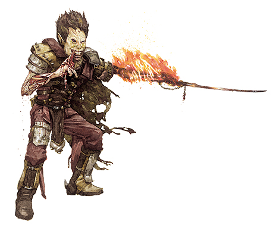

“墨菲斯托费利斯，火焰和硫磺的主人！我呼唤您的名字，我跪倒在您阶前！终有一天，您的名字将照耀地狱和深渊！”
－娜露儿，火焰之主。

墨菲斯托费利斯的信徒舞着地狱之火，烧尽一切违抗他的敌人。他们专心研究一切与火焰相关的事物，把这作为对第八领主的最大献礼。牧师，法师以及术士是墨菲斯托费利斯信徒的最佳人选，但事实上，任何职业都可以转而研习这地狱的火焰。
墨菲斯托费利斯的信徒既有可能单独行动，也可能集成团体：那是邪恶的阴谋家与破坏狂的大聚会。与魔鬼在一起自然让墨菲斯托费利斯的信徒感到愉快，而地狱犬，火蝾螈以及其他带着火焰的邪恶生物也常常与他们为伴。火巨人常常会试图进阶墨菲斯托费利斯的信徒。
生命骰：d8
需求：想要成为一名墨菲斯托费利斯的信徒，角色必须满足以下条件：
阵营：邪恶阵营
基础攻击加值：+6
专长：黑暗信徒，邪恶烙印
特殊：想要正式成为一名墨菲斯托费利斯的信徒，角色必须进行一种可怕的仪式，包括用魔法火焰活活烧死一名智慧生物。
本职技能：平衡（敏捷），攀爬（力量），解除装置（智力），易容（魅力），逃脱（敏捷），躲藏（敏捷），威吓（魅力），暗语沟通（感知），跳跃（力量），知识（宗教）（智力），聆听（感知），潜行（敏捷），专业（任意）（感知），骑乘（敏捷），探知（智力），搜索（智力），侦察（感知）
每等级技能点数：4+智力调整值
表5-4 墨菲斯托费利斯的信徒
等级 基础攻击加值 坚韧豁免 反射豁免 意志豁免 特殊
1 +1 +2 +2 +2 地狱火爪，火焰专精
2 +2 +3 +3 +3 火焰抗力10
3 +3 +3 +3 +3 地狱火爆破
4 +4 +4 +4 +4 闪光术
5 +5 +4 +4 +4 召唤哈玛魔
6 +6 +5 +5 +5 地狱火，火焰抗力20
7 +7 +5 +5 +5 火焰护盾
8 +8 +6 +6 +6 地狱火风暴
9 +9 +6 +6 +6 �D�D�D
10 +10 +7 +7 +7 浴火身躯
职业特性：
擅长武器及防具：墨菲斯托费利斯的信徒擅长使用简单武器，军用武器以及所有类型的防具和盾牌。
地狱火爪（SU）：墨菲斯托费利斯的信徒在进行徒手接触时可随意增加1d6点火焰伤害。
火焰专精（SU）：墨菲斯托费利斯的信徒在施展火焰相关的法术时在施法者等级上获得+1的奖励。
火焰抗力（SU）：墨菲斯托费利斯2级的信徒获得10点火焰抗力，当墨菲斯托费利斯的信徒等级达到6级时火焰抗力增强至20。
地狱火爆破（SU）：墨菲斯托费利斯3级的信徒可以随意从手中放射出一团地狱火焰，视为远程接触攻击，攻击距离30尺，造成4d6点火焰伤害。
闪光术（SP）：每日每等级一次，墨菲斯托费利斯4级的信徒可以施展如同法术“闪光术”的效果，施法者等级15。
召唤哈玛魔（SP）：每日一次，墨菲斯托费利斯5级的信徒可以召唤一名哈玛魔。视为施展“怪物召唤术”，施法者等级15，当墨菲斯托费利斯的信徒等级达到9级时，每日可以召唤1d4名哈玛魔。
地狱火（SP）：每日三次，墨菲斯托费利斯6级的信徒可以施展如同法术“地狱火”的效果，施法者等级15。
火焰护盾（SP）：每日两次，墨菲斯托费利斯7级的信徒可以施展如同法术“火焰护盾”的效果，施法者等级15。
地狱火风暴（SP）：每日两次，墨菲斯托费利斯8级的信徒可以施展如同法术“地狱火风暴”的效果，施法者等级15。
浴火身躯（SU）：当墨菲斯托费利斯的信徒达到10级时，可以每日10分钟将身体幻化为火焰。在这种状态下，角色对火焰免疫，并获得伤害减免30/+1。角色在成功进行接触攻击后，目标必须进行反射检定（DC 15），失败将全身着火。火焰每轮造成1d4点伤害（参见城主手册第三章）。着火的生物必须使用一个移动等效动作扑灭火焰。使用天然武器或是空手击中角色的生物承受2d6点火焰伤害，同时也必须进行反射检定（DC 15），失败也将全身着火。